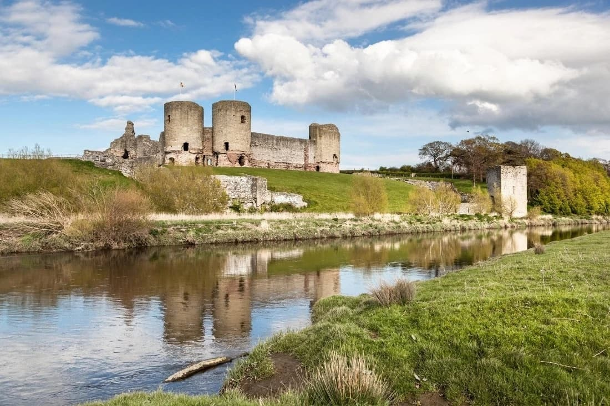

Rhuddlan Castle
Guarding the river Clwyd, Rhuddlan was one of the first castles built by King Edward 1st of England during his wars with the Welsh. A relatively safe haven, where he and Queen Eleanor would stay, more than any other castle in North Wales. *Entrance fee applicable. This site can also just be a quick photo stop